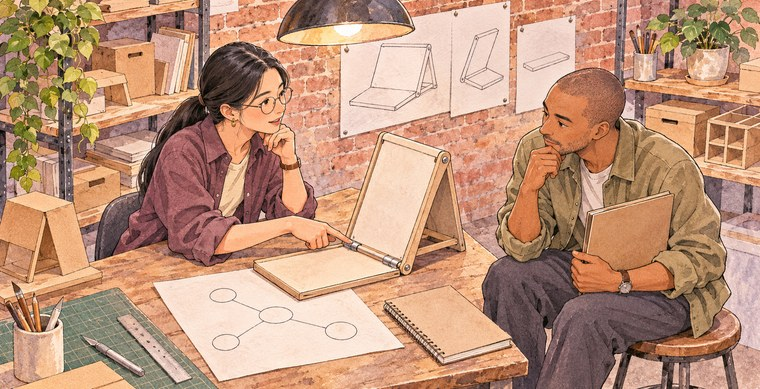

ENT-13 · 香港 · 10–15分鐘 · 創業人脈網絡 · 接觸資源 · 強連結與弱連結
先問熟人，還是去見連熟人也不認識的人？

新聞裏
2026年9月7日，香港科技園公司舉行 Co-Development and Investment Conference，讓科技企業、投資者與業界夥伴建立聯繫。公布的議程包括交流、設施參觀和配對活動。
這類活動讓人有機會接觸不同人士和資源，但獲得引薦並不代表能建立有用的合作關係。下文的創辦人、會面及提議均屬虛構，並非香港科技園公司的活動條款。
課堂決定
虛構課堂情境。一名香港創辦人正為小型展覽開發一款可摺平的展示架。委託製作生產樣辦之前，她需要機械設計意見、物色一名可能兼職負責技術協調的人員，並找到一家可小批量製作的廠商。她尚未承諾推出產品或向客戶交貨。
這個月，她有八小時和3,000港元可用於一項有計劃的拓展人脈活動，涵蓋準備、交通、會面和跟進。A 是與四位信任的印刷及展覽設計界熟人舉行工作會議；B 是參加由一位只見過一次的籌辦人安排的跨行業諮詢會。兩個選項都在同一時間和預算限額內，但已安排好的活動這個月不能拆開來參加。
A 的熟人了解她的工作方式，可以坦率給意見。B 或可讓她接觸原本不熟悉的專業技能，但她需要解釋項目內容，並查明對方是否合適。無論選哪一項，原有的人脈關係都會維持。這些會面只為初步了解，並非付費工程服務、聘用邀約或製造合約。
| 企業下一步所需的資源 | 單憑引薦無法確認的事項 |
|---|
| 機械設計意見 | 相關能力及工作範圍 |
| 潛在技術協調人選 | 意願、可投入時間及議定薪酬 |
| 小批量製作 | 製作能力、數量、時間及價格 |
你的決定這個月你會選 A 還是 B？說明你期望透過這段關係獲得甚麼，不要只看哪項活動認識的人較多，或只選自己最喜歡相處的人。
第二輪 · 多了一項資料
創辦人畫了一張草圖，標示誰認識誰。她信任的四位熟人經常合作，也使用相同的印後加工供應商。他們熟悉展覽佈置，能就佈置及設計要求提供有根據的意見，但沒有人表示自己具備機械設計專長，或手頭有合適技術人選的線索。他們也不排除日後找到其他可聯絡的人。
諮詢會的籌辦人與另一個產品工程圈子有聯繫。一位機械設計師和一家小批量金屬製作廠商已同意在 B 的預約時段內作簡短的初步交流。籌辦人也可以問一位技術人員是否願意接受引薦，但尚未取得對方同意。草圖上，這幾方與創辦人的四位熟人均無聯繫。
設計師以往的相關工作、廠商的產能和價格，以及技術人員是否有空，仍有待核實。沒有人同意承接所需工作。A 可借助熟人的可靠意見，把設計要求訂得更清楚；B 現在則有明確途徑接觸兩條資源線索。時間和預算限額不變，仍只能選一項活動。技術工作、聘用和製作均須另行審查、編列預算和達成協議。
你的決定你會維持原先的選擇，還是改選？指出欠缺哪項資源，以及誰可以幫忙接通這項資源。然後說明，在把一次會談視為可用的支援或一項承諾之前，你會核實甚麼。
畫出可接觸的資源，不只數通訊錄上的名字
四位熟人各有價值，但在這張草圖裏，他們掌握的資料有所重疊。幾個名字可能指向同一類經驗和同一批供應商。要看的是他們能幫企業了解甚麼、做到甚麼，而不單是有多少人出席。
籌辦人讓創辦人接觸到原本接觸不到的專業圈子。這就是橋樑：由一個人把原本沒有聯繫的群體連起來。B 的價值在於有機會接觸互補的知識和能力，並不表示客戶自然會增多，或活動一定更好。
信任和新資料解決不同的問題
強連結是已建立的關係，有助坦誠交流和協調。較弱的連結是發展未深的關係，可能讓人接觸熟悉圈子以外的人。無論哪一類，都不保證對方有能力、願意慷慨相助，或能提供有用的資料。
選 B 有理據，因為兩場初步交流都對應目前欠缺的技術資源。如果當前的瓶頸是要把規格訂得更清楚，而創辦人也接受延後物色新資源，選 A 同樣有理據。不要斷言所有弱連結都能填補資源缺口，也不要說可信的熟人從不帶來新見解。
先核實線索，再定下一步
向設計師了解相關工作經驗、可承接的工作範圍，以及應如何審視展示架設計。向廠商確認能否製作樣辦、最低訂量、產能、前置時間和報價。至於潛在的技術協調人選，先徵得對方同意聯絡，再商討職責、可投入時間和受薪條件。任何引薦都不能取代這些核實工作。
準備一份不含機密資料的簡短項目說明，分享聯絡資料前先徵得同意，並商定跟進方式。不要僅因籌辦人作了引薦，就發送非公開的客戶資料或專有圖則。匯報進展時，應列出所得線索、已核實的能力和另行商定的後續步驟，不要說已找到合作夥伴。
教師說明
公布第二輪資料後，請學生畫出兩個群組和一道橋樑。橋樑是籌辦人，不是機構提供的保證。創辦人現在可以只選一項活動，毋須就此放棄其他關係。
評估建議有否指出資源瓶頸、兼顧信任的價值，並訂出核實步驟。不要只因學生選了較新穎的方案便給分。ENT-04 比較已確認獲批的支援可用於哪些用途；本個案則關乎如何接觸尚未承諾提供資源的人。MKT-09 衡量推廣活動額外觸及的受眾；本個案不計算能觸及多少買家。相關研究概念不能證明這場諮詢會能提升銷售或令企業更有機會存續。
第二輪
創辦人畫了一張草圖，標示誰認識誰。她信任的四位熟人經常合作，也使用相同的印後加工供應商。他們熟悉展覽佈置，能就佈置及設計要求提供有根據的意見，但沒有人表示自己具備機械設計專長，或手頭有合適技術人選的線索。他們也不排除日後找到其他可聯絡的人。
諮詢會的籌辦人與另一個產品工程圈子有聯繫。一位機械設計師和一家小批量金屬製作廠商已同意在 B 的預約時段內作簡短的初步交流。籌辦人也可以問一位技術人員是否願意接受引薦，但尚未取得對方同意。草圖上，這幾方與創辦人的四位熟人均無聯繫。
設計師以往的相關工作、廠商的產能和價格，以及技術人員是否有空，仍有待核實。沒有人同意承接所需工作。A 可借助熟人的可靠意見，把設計要求訂得更清楚；B 現在則有明確途徑接觸兩條資源線索。時間和預算限額不變，仍只能選一項活動。技術工作、聘用和製作均須另行審查、編列預算和達成協議。
你的決定你會維持原先的選擇，還是改選？指出欠缺哪項資源，以及誰可以幫忙接通這項資源。然後說明，在把一次會談視為可用的支援或一項承諾之前，你會核實甚麼。